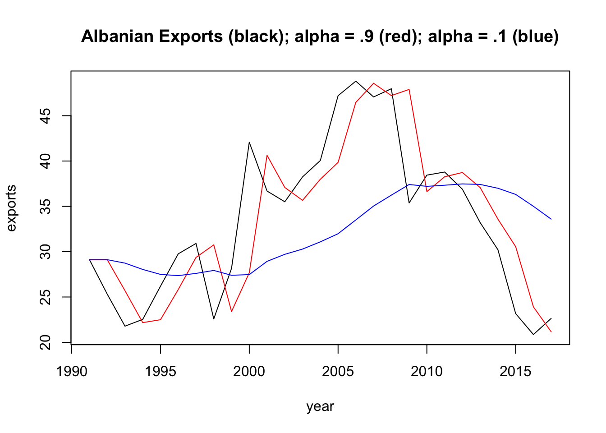

Set 5 Review/ Mild Extensions
5.1 Linear Filtering
We saw a case of a linear filter with the moving average in Lab 1.
A linear filter is a mathematical operation that transforms a time series into a new time series by applying a weighted sum of past and present values of the original series.
Another popular linear filter, generally appropriate for a time series with no clear seasonality or trend, is with exponential smoothing. Like the moving average, this method averages over recent observations but differs in that it assigns relatively more weight to observations that are relatively closer. This idea can be expressed as,
\[\begin{align}
\hat{y}_{t+1 | t} = \alpha y_t + (1-\alpha) \hat{y}_{t | t-1},
\end{align}\]
where \(\hat{y}_{t+1 | t}\) can be interpreted as the smoothed value of \(y_{t+1}\) given data up to time \(t\). So, for the first few smoothed values, we have:
\[\begin{align}
\hat{y}_{1|0} &= l_0 \\
\hat{y}_{2|1} &= \alpha y_1 + (1-\alpha) l_0 \\
\hat{y}_{3|2} &= \alpha y_2 + (1-\alpha) \hat{y}_{2|1} \\
&= \alpha y_2 + (1-\alpha) \alpha y_1 + (1-\alpha)^2 l_0
\end{align}\]
Since we don’t have data prior to \(y_1\), we denote \(\hat{y}_{1 | 0} = l_0\). Therefore, this model depends on two parameters, \((l_0, \alpha)\). If we continue with the sequence above, each predicted value \(\hat{y_t}\) can be expressed,
\[\begin{align}
\hat{y}_{t+1 | t} = (1-\alpha) ^ t l_0 + \sum_{j=0}^{t-1} \alpha (1-\alpha) ^ j y_{t-j}. \\
\end{align}\]
Let’s take a look at how this method depends on the parameters. We will use Algerian export data from tsibbledata, which you can grab here:
es = function(par, ts) { # parameter vector: first parameter is alpha/ second is l0
yt = c(par[2])
for(j in 2:length(ts)) {
yt[j] = par[1] * ts[j-1] + (1-par[1]) * yt[j-1]
}
return(yt)
}Below, we compute the exponentially smoothed series using es(c(0.9, y[1]), y) as well as \(\alpha = 0.1\).

For any \(\alpha\) between 0 and 1, the weights attached to the observations decrease exponentially as we go back in time, hence the name “exponential smoothing”. If \(\alpha\) is small (i.e., close to 0), more weight is given to observations from the more distant past. If \(\alpha\) is large (i.e., close to 1), more weight is given to the more recent observations.
The \((\alpha, l_0)\) parameters can be estimated by minimizing the SSE:
\[\begin{align} \text{SSE} = \sum_{i=i}^T \bigg(y_t - \hat{y}_{t | t-1} \bigg)^2. \end{align}\]
Change the es function we developed in [Exponential Smoothing] to return the SSE, rather than yt, the smoothed time series. Now, use the optim function to find the values of \((\alpha, l_0)\) that minimize SSE. Plot the exponentially smoothed time series of the Albanian export data using the optimized values for \((\alpha, l_0)\). What are these values?
5.2 AR Parameter Constraints
This relates to the AR Stationarity section from last week’s material. Prove that the following AR process either is or is not stationary:
\[x_t = -0.2 x_{t-1} + 0.4 x_{t-2} + w_t\]
5.3 MA Parameter Constraints
MA models do not have issues with stationarity (since they are finite sums of white noise), but there can be issues with parameter identifiability. That is, there can be multiple ways to write a single MA model. This leads to the parameter constraint on the \(\theta\) parameters in ARMA Models. To show concretely how this can be a problem, show that the following two MA(1) models are the same (that is, they have the same mean function, variance function, and autocorrelation function).
\[ x_t = w_t + \frac{1}{5} w_{t-1} ~\text{with} ~w_t \sim ~\text{N}(0,25) \\ \Updownarrow \\ x_t = w_t + 5 w_{t-1} ~\text{with} ~w_t \sim ~\text{N}(0,1) \]
5.4 SARIMA models
Write out the following SARIMA model equations and describe the theoretical ACF function. (For example, The theoretical ACF tails of slowly at lags \(\ldots\)). You can use simulations (astsa::sarima.sim) to arrive at your answer (show at least one empirical ACF per model).
ARIMA\((0,0,0)(0,0,1)_{12}\)
ARIMA\((1,0,0)(1,0,0)_{12}\)
5.5 Residuals check
In Check the residuals, you can see the details for the Box-Pierce test. This is a very common way to check that the residuals process resembles white noise. Write a function that takes a time series vector as input and returns the Ljung-Box Q-Statistic for \(k=2\), along with the p-value for the hypothesis test. Then, check your function’s output using Box.test(x, lag = 2).